eDNA Water Collection & Filtration
Materials:
Prep
Bleaching
(eg. filter holders, other filtering materials, bottles, and stoppers)
Bleach & MilliQ bath set up:
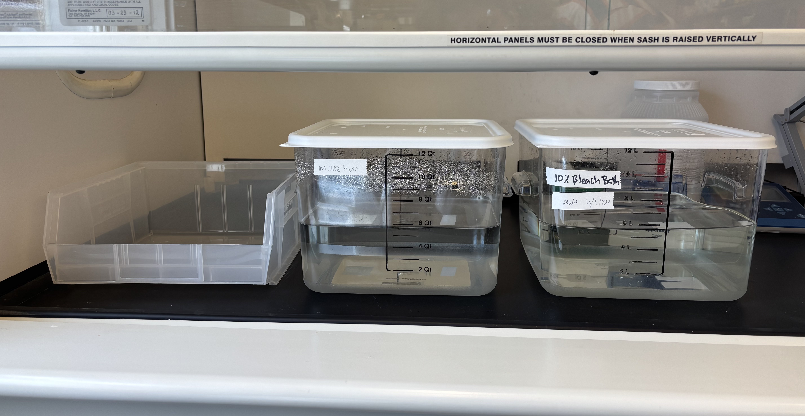
NOTES:
- before starting bleach process, make sure drying contrainers have been recently wiped down with bleach, DI water, & 70% ethanol
- the bleach and DI water baths should be changed out at least monthly (more frequently if cleaning a lot of stuff)
- when making new bleach bath make at least 5 Liters
- 5 L of 10% bleach solution: 500 ml bleach with 4500 ml milliQ H20
Prepping bottles and filter housings (once dry)
Cooler with bottles capped:
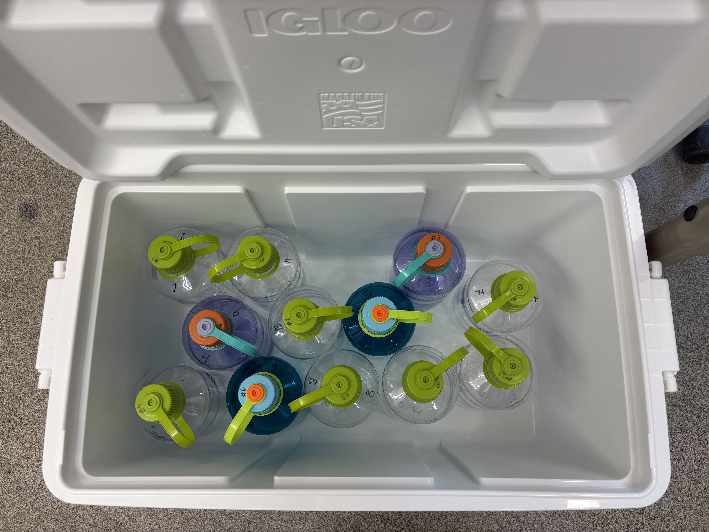
Bottle with stopper:
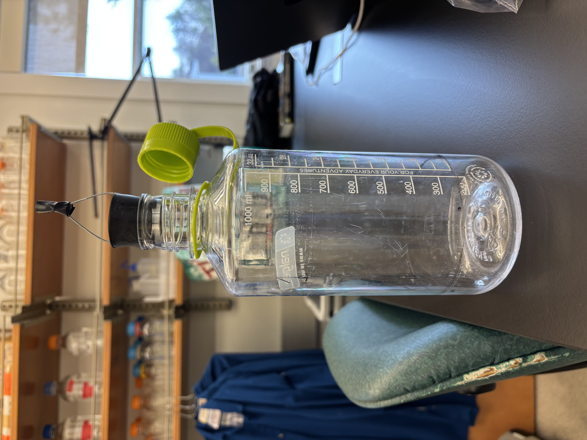
filter packs:
supplies cleaned but not prepped
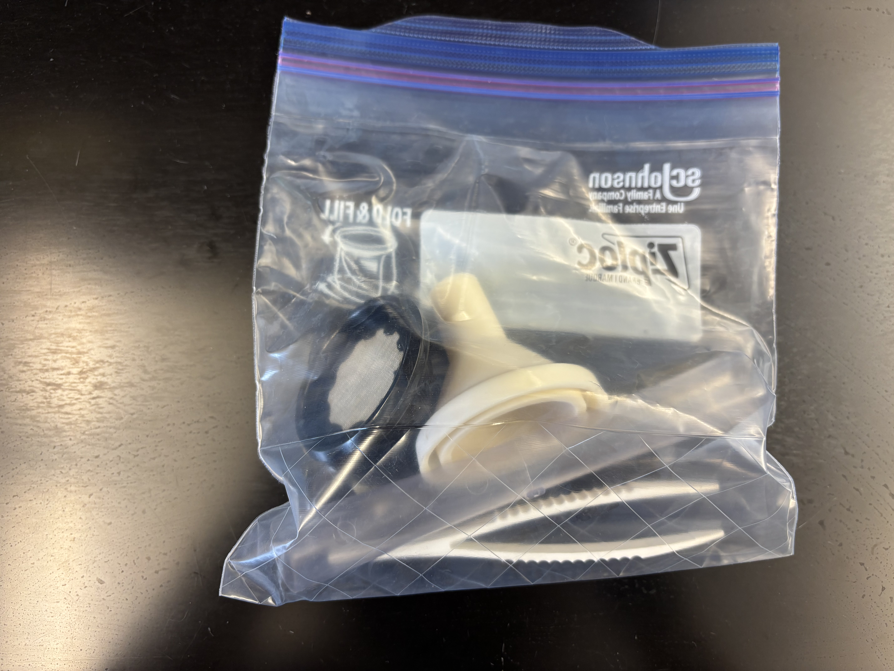
supplies cleaned and prepped with filters
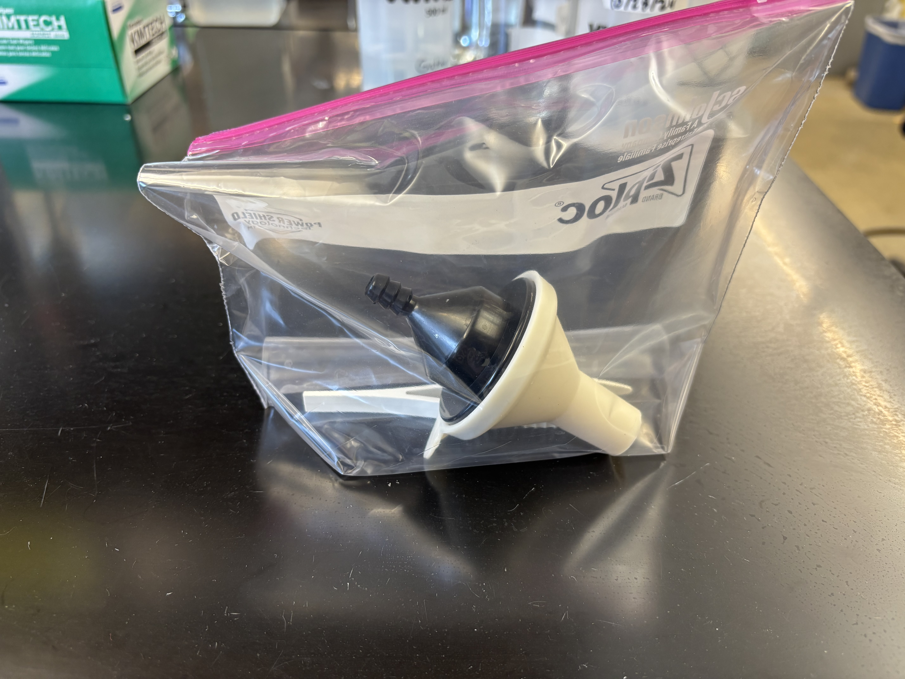
NOTES:
- filters and filter backers are seperated by paper discs (usually blue) and these should be discarded to get to the next filter or backer
- 1 μm filters
- drain disc/filter backing
drain disc and filter boxes:
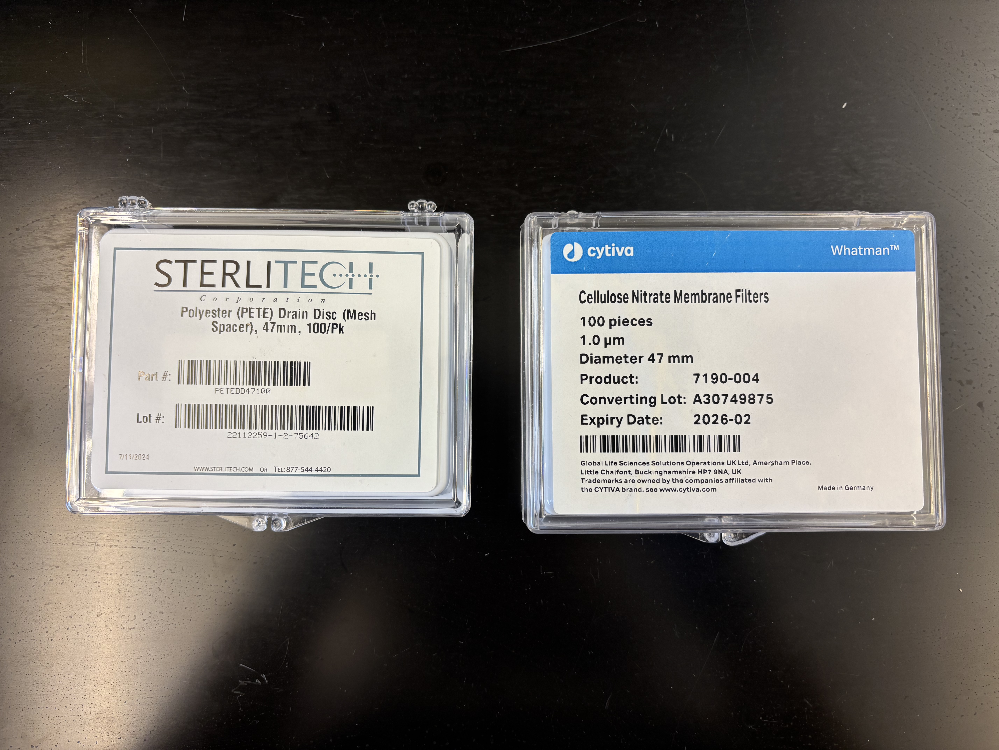
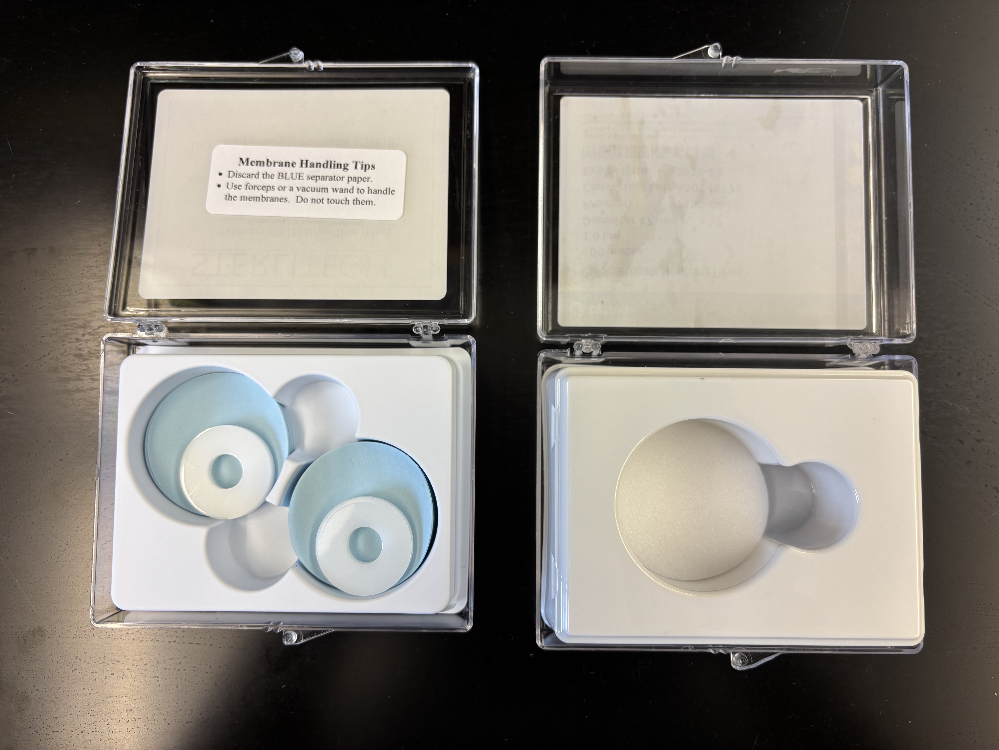
Water collection in field (eg. off boat)
Need:
water collection device:
 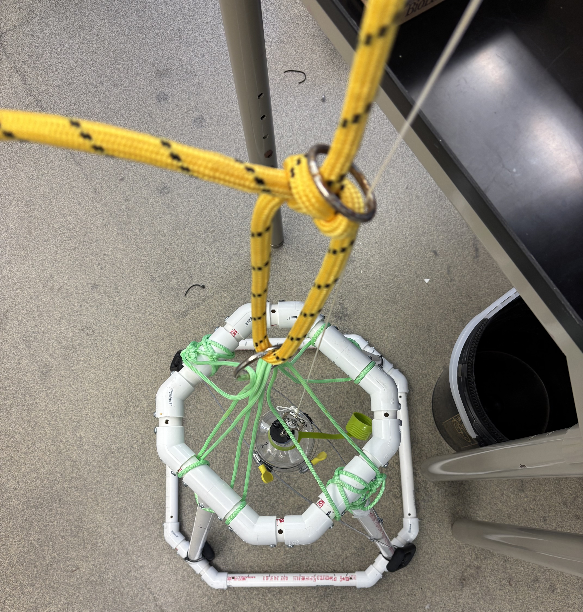 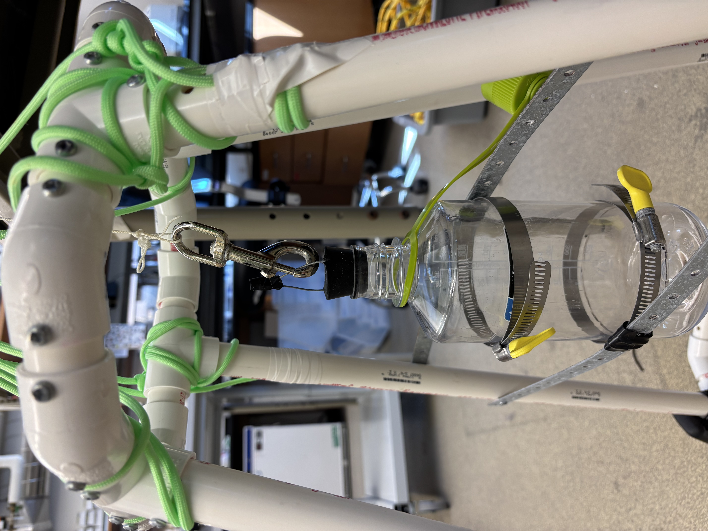
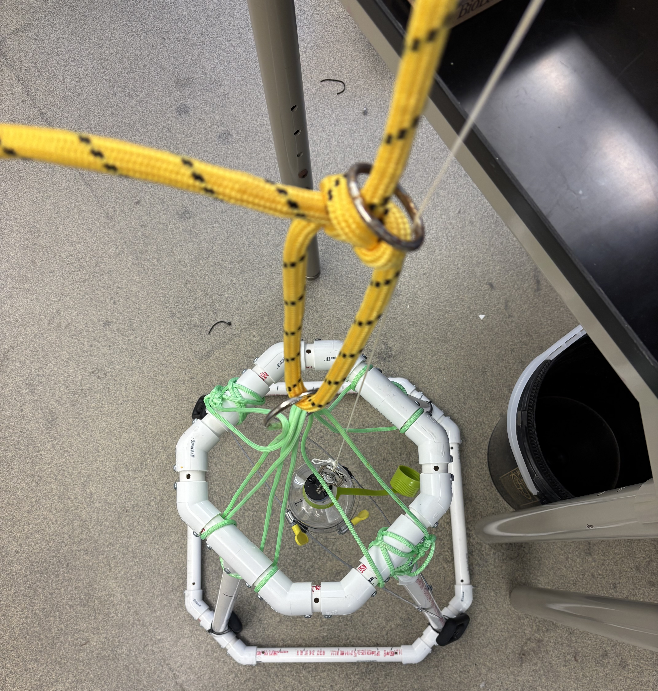 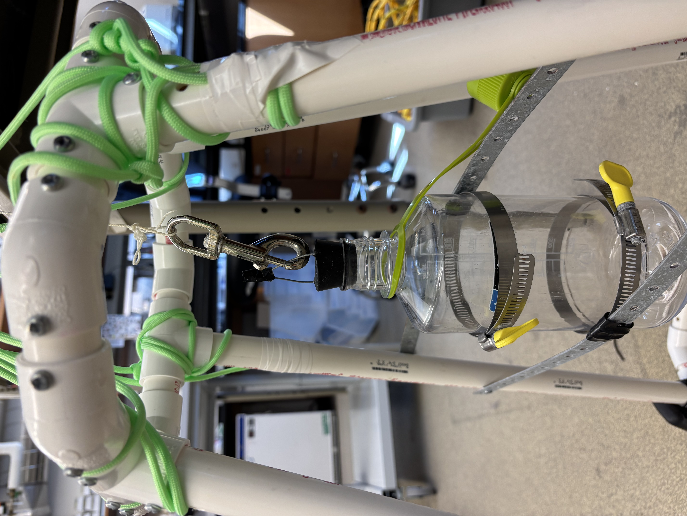
Steps:
Next Step:
- bring bottles on ice back to the lab
- filter water same day then store in -20 C freezer (see: filtering in the lab below)
filtering in the lab
Need:
filtering water in lab:

Steps:
NOTES:
- start and end filtering process by filtering 1 L bottle of milliQ H20 stored in sterile glass bottle (use for extraction neg control, 2 total)
- Keep bottles of water in ice cooler while working
filtering water in the field (eg. Grabowski tanks at MSC)
Need:
Prep Tanks
Prepped Bin:
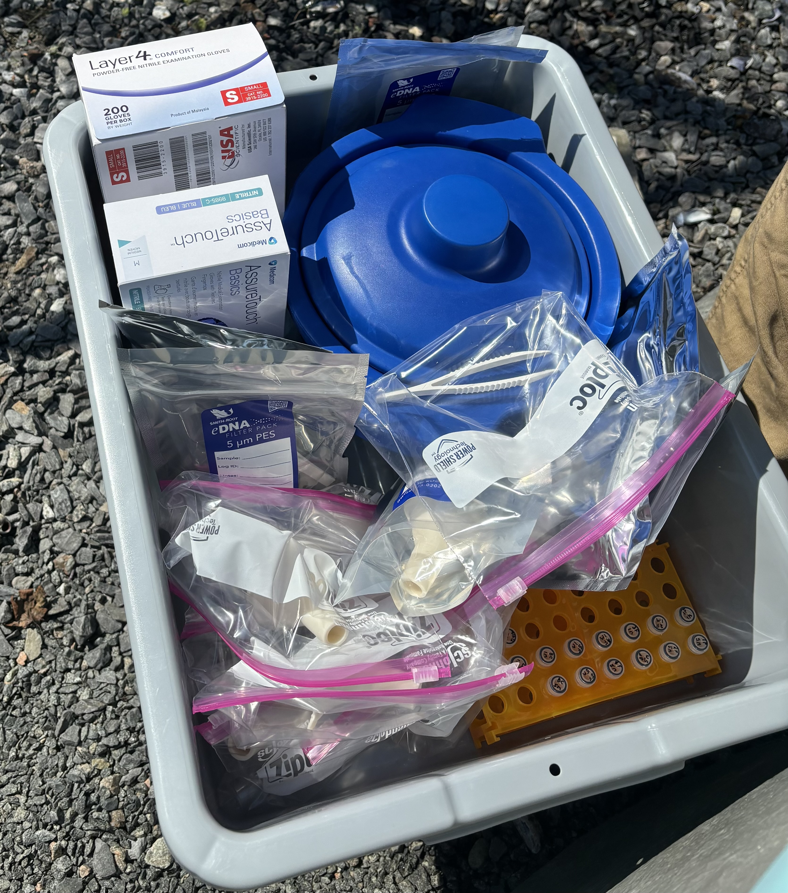
Filtering
Next Steps:
- lysis and extract DNA from filters
- bleach nalgene bottles, stoppers, and filter supplies (see: Prep section)
- prep filter bags (see: Prep section)